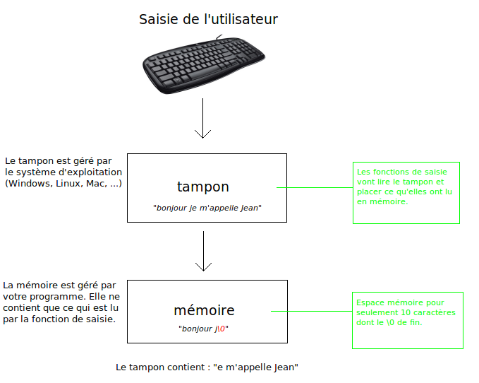

Un problème très perturbant en programmation est la saisie sécurisée. On vous a souvent dit que scanf() n'était pas sécurisé, qu'il valait mieux utiliser fgets() et les fonctions de conversions. A vrai dire, pour bien manipuler scanf() et en exploiter toutes les possibilités il faut avant tout maitriser les pointeurs, ensuite son utilisation est plus rapide, bien que plus complexe, mais n'est pas moins sécurisé que fgets().
Dans le tutoriel de M@teo21, vous ne voyez que la surface de scanf(), ici, nous allons gratter un peu plus.
La chaine fmt contient la forme de la chaine à récupérer, et stockera les valeurs dans une liste d'adresses représentées par ...
Le nombre de valeurs récupérées avec succès sera retourné par la fonction (d'où le int).
Voici une utilisation comme vous avez vu :
int variable = 0;
scanf ("%d", &variable);
printf ("%d\n", variable);
Là on précise que l'on ne veut récupérer uniquement un nombre entier de type int. On appelle %d un format, il en existe plusieurs autres que vous avez croisé dans les différents tutoriels sur le C.
Mais quels sont les différents formats ?
Format
Type
%d
Entier décimal signé (int)
%i
Entier signé (int), lu en base 16 s'il commence par 0X ou 0x, lu en base 8 s'il commence par O, lu en base 10 dans les autres cas
%o
Entier non signé en base 8 (unsigned int)
%u
Entier non signé (unsigned int)
%x,%X
Entier non signé en base 16 (unsigned int)
%e, %f, %g
Nombre flottant, associé à un float sauf s'il est précédé d'un l, %lf par exemple, (dans ce cas c'est double)
%s
Chaine de caractères terminée par un \0
%c
Séquence de caractère (par défaut 1)
Pour les entiers, si on précède leurs format d'un l (par exemple %ld) ce n'est plus un int mais un long.
Et surement d'autres, je ne peux tous les connaître ;)
Qu'est-ce qu'un format ? C'est simplement le % suivi des lettres qui définissent le type de retour. (%d par exemple).
Alors ils peuvent avoir une taille ?
Évidemment, il suffit de les faire précéder par la nombre de caractère qui sera lue. Ce n'est pas clair, mais un exemple vaux mieux qu'un millions de mots :
Comme vous le voyez, on va lire les 5 premiers caractères pour les transformer en chiffre.
Mais où passe le reste ?
Là est le problème, le reste demeure dans le tampon, en mémoire, et au prochain appel de scanf() ils seront lus à la place des nouvelles données. Nous verrons plus tard comment résoudre ce problème.
Les chaînes de caractères
Vous avez vu que pour récupérer une chaine de caractère il fallait faire comme ceci :
Ceci vous semble correct, cependant c'est une porte ouverte à ce que l'on appel "buffer overflow", soit "dépassement de tampon". Imaginez l'utilisateur tape 15 caractères, et non 5 (sachant que la zone mémoire peut en stocker 10 dont le caractère de fin de chaîne \0), que va-t-il se passer ? Et bien ils vont tout simplement être écrit dans une zone non alloué, ce qui risque d'effacer une précédente valeur qui servait à votre programme ou pire, à un autre programme, ou vous risquez d'avoir une erreur de segmentation.
Comment résoudre cela ? Il nous suffit de préciser un nombre de caractères à lire, comme ceci :
Lorsque vous tapez au clavier, chaque caractère est écrit dans un tampon (buffer en anglais). C'est dans ce tampon que scanf() (ou même fgets()) ira lire. Tout ce qui n'est pas lu sera lu au prochain appel d'une fonction de lecture.
Si l'utilisateur tape 10 caractères, seul 5 seront lus, le reste sera toujours dans le tampon et risque de compromettre les prochains appels des fonctions de lecture qui récupèrera en premier ces 5 caractères.
Voici un schéma :

Comment faire alors ?
Il faut donc vider le tampon après chaque appels de scanf() ou de fgets().
Une méthode très simple est la suivante :
int c;
while ((c = getchar ()) != '\n' && c != EOF);
Ici on lit tout le tampon jusqu'à la rencontre de ' ' ou de la fin du fichier. Une fois lu il est donc vidé.
Et avec scanf() ?
Si l'on précède le type du format par le caractère * celui ci sera lu mais pas retourné. Par exemple :
scanf ("%5s %*d %5s", chaine1, chaine2);
Ici on lit 5 caractères que l'on assigne à chaine1, puis un espace, on lit un nombre, puis un espace et enfin on lit à nouveau 5 caractères que l'on assigne à chaine2.
Nous verrons dans le chapitre suivant que scanf gère les expressions régulières. Ici nous allons en utiliser une : ^ <- cela signifie que l'on va lire TOUT sauf le caractère .
scanf ("%*[^\n]");
Il ne reste plus qu'un dans le buffer que l'on va éliminer d'un simple getchar().
Mais qu'est-ce donc ? C'est ce que l'on appelle une expression régulière que l'on appelle également regex (de l'anglais regular expression). Avec scanf() les expressions régulières sont placées entre [] et ne s'appliquent qu'aux chaînes de caractères..
Si la vérification de la regex échoue (on n'a pas tapé les caractères voulus), alors scanf() terminera en erreur. On apprendra dans le chapitre suivant comment récupérer les erreurs avec scanf().
Voici des exemples de regex :
char chaine[81] = {0}; /* doit pouvoir contenir tous les caractères dont le '\0' de fin */
scanf ("%80[abcdefghijklmnopqrstuvwxyz]", chaine);
/* que l'on peut écrire : */
scanf ("%80[a-z]s", chaine);
/* si l'on veut également les majuscules : */
scanf ("%80[a-zA-Z]", chaine);
/* que les lettres de d à y (et de H a L) et les chiffres de 2 à 7 : */
scanf ("%80[d-yH-L2-7]", chaine);
/* On veut TOUS les caractères : */
scanf ("%80[*]", chaine);
Le caractère ^ signifie une saisie ne contenant PAS les caractères suivant, par exemple, si l'on désire une chaîne qui ne contient pas le caractère de retour :
Nous allons voir comment détecter si une saisie à échoué, comment savoir quelle est la séquence qui n'est pas bonne et comment y remédier.
Le retour de scanf()
Souvenez vous dans le premier chapitre du prototype de la fonction scanf() :
int scanf (const char *fmt, ...);
La valeur de retour est de type int, en vrai, scanf() retourne le nombre de saisies qui ont eu lieu avec succès. Par exemple :
int n1, n2;
int ret;
printf ("> ");
ret = scanf ("%d-%d", &n1, &n2);
printf ("%d\n", ret);
Donnera ceci :
> 5-8
2
> 5-a
1
Dans le premier cas, les deux saisies ont eu lieu avec succès, donc scanf() retourne 2, dans le deuxième cas, une a échoué (on demande un nombre, il nous écrit une lettre o_O ), scanf() retourne donc 1. Et si aucune saisie ne fonctionne, scanf() renvoie tout simplement 0.
Cette valeur nous dit donc si les données reçues sont potables, on peut donc en cas d'erreur vider le buffer et mettre fin au programme proprement.
Voici comment on procède :
int nombre;
int ret;
ret = scanf ("%d", &nombre);
/* ne pas oublier de vider le buffer après la saisie */
scanf ("%*[^\n]");
getchar ();
/* vérification de la saisie */
if (ret != 1)
{
printf ("erreur de saisie\n");
exit (EXIT_FAILURE); /*!< la fonction exit() et la constante EXIT_FAILURE sont définies dans stdlib.h */
}
printf ("%d\n", nombre);
Pourquoi ne pas avoir fait : scanf ("%d%*[^ ]", &nombre); ?
Si la saisie échoue au niveau du %d, scanf s'arrêtera là et retournera la valeur de retour (qui sera ici 0), et le reste de la saisie ne sera pas effectué (donc le buffer ne sera pas vidé). Ici cela permet de vider le buffer en cas d'erreur et également en cas de réussite.
Le format spécial %n
Le formatteur %n retourne le nombre de caractère lu par scanf() dans une variable de type int, celui ci n'est pas compté non plus dans la valeur de retour de scanf(). Elle permet donc une meilleure précision sur la gestion d'erreur :
Exemple : L'utilisateur tape ceci : " 123azerty456uiop789 " On ne veut récupérer uniquement les premiers et derniers chiffres (123 et 789) La syntaxe est donc la suivante : [nombre]~[lettres]~[nombre]~[lettres]~[nombre]
Logiquement nous ferions cela :
int a, b;
scanf ("%d%*[a-z]%*[0-9]%*[a-z]%d", &a, &b);
On récupère le premier nombre
On vérifie la présence de lettres minuscules (sans assignement)
On vérifie la présence de chiffres (sans assignement)
On vérifie la présence de lettres minuscules (sans assignement)
On récupère le dernier nombre
On a vu que si scanf réussi, on aura comme valeur de retour 2 (puisqu'on assigne deux éléments). Mais en cas d'échec, la valeur ne pourra être que 0 (rien d'assigné) ou 1 (premier entier).
Si l'on veut faire une gestion fine des erreurs, voire reprendre sur ces mêmes erreurs, on ne dispose pas assez d'informations pour savoir où exactement scanf a échoué.
C'est ici que le format %n nous aide :
int a, b;
int seq0, seq1, seq2, seq3, seq4;
int ret;
ret = scanf ("%d%n%*[a-z]%n%*[0-9]%n%*[a-z]%n%d%n", &a, &seq0, &seq1, &seq2, &seq3, &b, &seq4);
/* vidage du buffer */
scanf ("%*[^\n");
getchar ();
/* vérification */
if (ret != 2)
{
if (!seq0) /* premier nombre qui a échoué */
if (!seq1) /* première séquence de lettre qui a échoué */
if (!seq2) /* la séquence de chiffre a échoué */
if (!seq3) /* la dernière séquence de lettre a échoué */
if (!seq4) /* dernier nombre qui à échoué */
}
Les chaines de format de scanf() commencent à devenir complexes ^^ .
Comme vous le voyez, la saisie sécurisée est totalement possible avec scanf(). Il faut simplement retenir cela : Il faut avant tout contrôler la taille de la saisie.